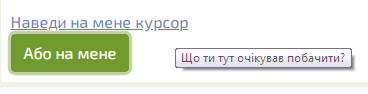

Tooltip — елемент з текстом, що називається спливною підказкою. Плагін tooltip.js дозволяє показувати невелике спливаюче вікно, яке з’являється, коли користувач наводить курсор миші на елемент:

Цей модуль можна використовувати як окремо (підключити окремо файл tooltip.js), так і разом з іншими компонентами Bootstrap (за допомогою файлу bootstrap.js або bootstrap.min.js). Для роботи плагін вимагає встановленого jQuery.
Щоб вказати, на якому елементі показувати підказку, додай йому атрибут data-toggle="tooltip".
В атрибуті title треба вказати текст, який з’явиться при наведенні курсору:
<a href="#" data-toggle="tooltip" title="Що ти тут очікував побачити?">Наведи курсор</a>
Тільки цього коду недостатньо, підказки також повинні бути підключені за допомогою jQuery. Щоб вибрати, які елементи повинні мають створювати такі підказки, використовується метод tooltip(). Окрім того, наступним кодом можна підключити підказки на всьому документі одразу, зазвичай так і робиться:
<script>
$(document).ready(function() {
$('[data-toggle="tooltip"]').tooltip();
});
</script>
За замовчуванням підказки відображаються над елементом.
Щоб змінити позицію підказки, використовуй атрибут data-placement:
<a href="#" data-toggle="tooltip" data-placement="top" title="підказка!">підказка</a> <a href="#" data-toggle="tooltip" data-placement="bottom" title="підказка!">підказка</a> <a href="#" data-toggle="tooltip" data-placement="left" title="підказка!">підказка</a> <a href="#" data-toggle="tooltip" data-placement="right" title="підказка!">підказка</a>
Окрім того, можна використовувати атрибут data-placement із значенням auto: в такому випадку браузер сам вирішить, яку позицію краще вибрати. Наприклад, при значенні auto left підказка буде відображатися зліва, коли це можливо, в іншому випадку — праворуч.